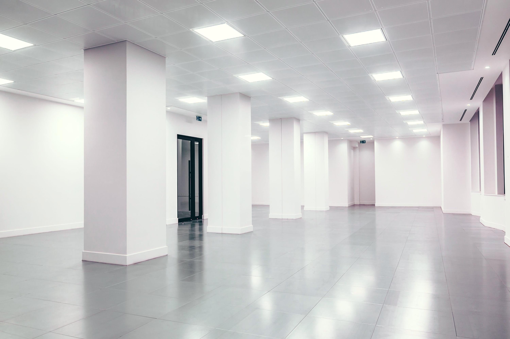

R-01
Zabudowa karton-gips


| Zasięg | Kalisz i Wielkopolska |
|---|---|
| Kiedy wchodzimy | gdy instalacje są gotowe |
| Rozliczenie | za faktycznie zrobione metry |
| Materiały | system jednego producenta |
| Telefon | odbieram osobiście |


Specjalizujemy się w dużych obiektach: szkoły, szpitale, mieszkaniówka deweloperska.
Po zakończeniu robót mierzymy fizycznie, ile czego zostało zrobione, i na tej podstawie wystawiam fakturę.
Jak wyceniamy →